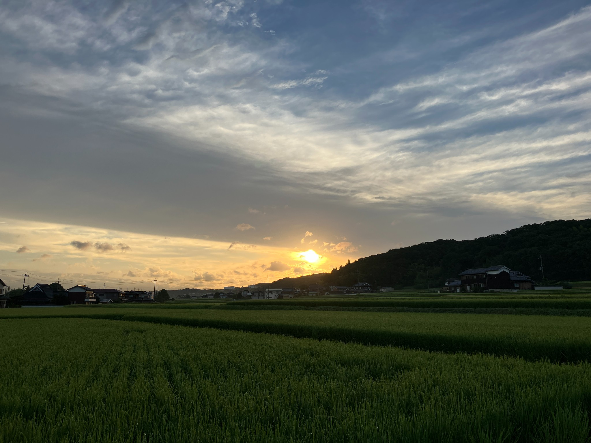
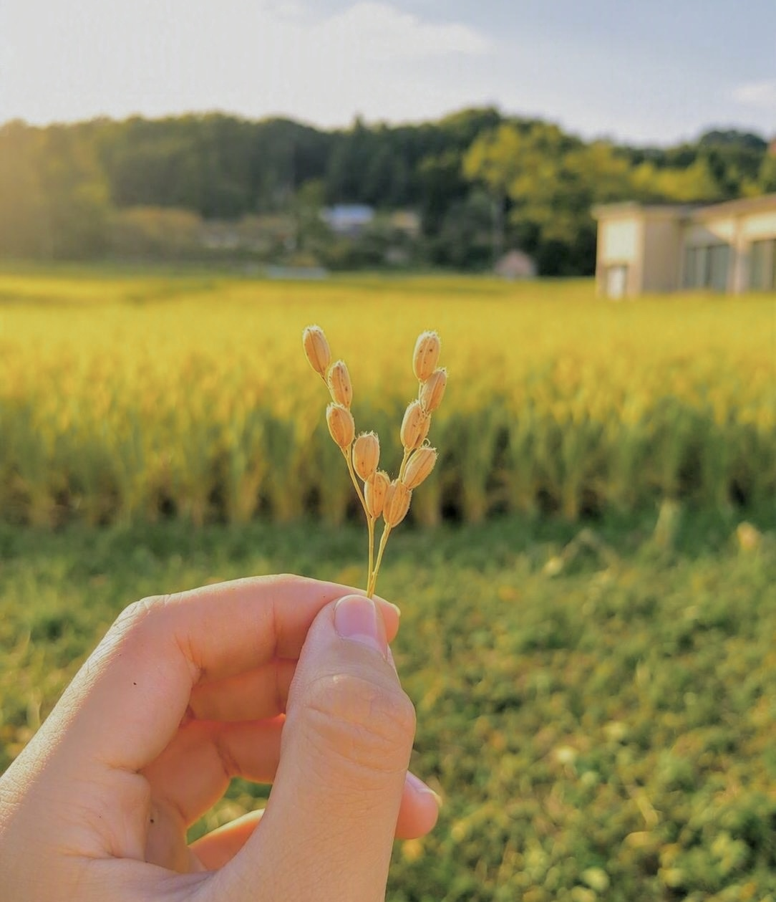
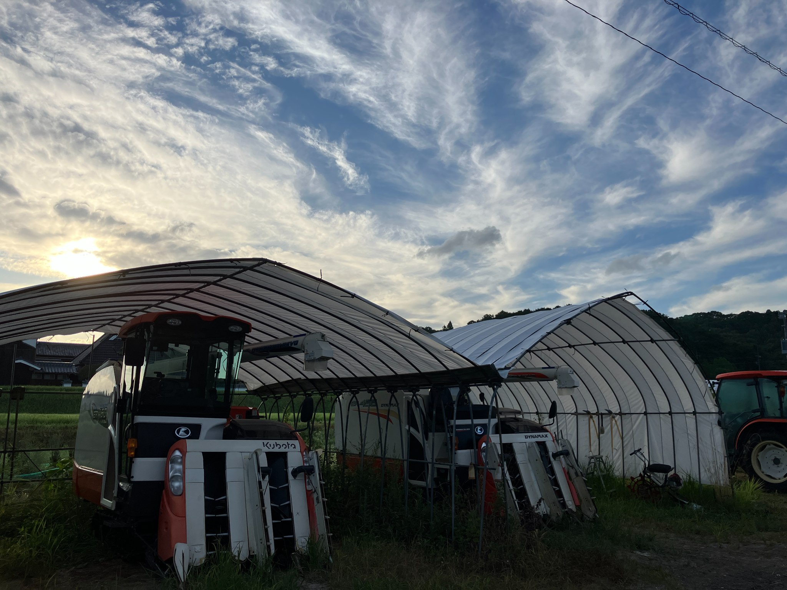
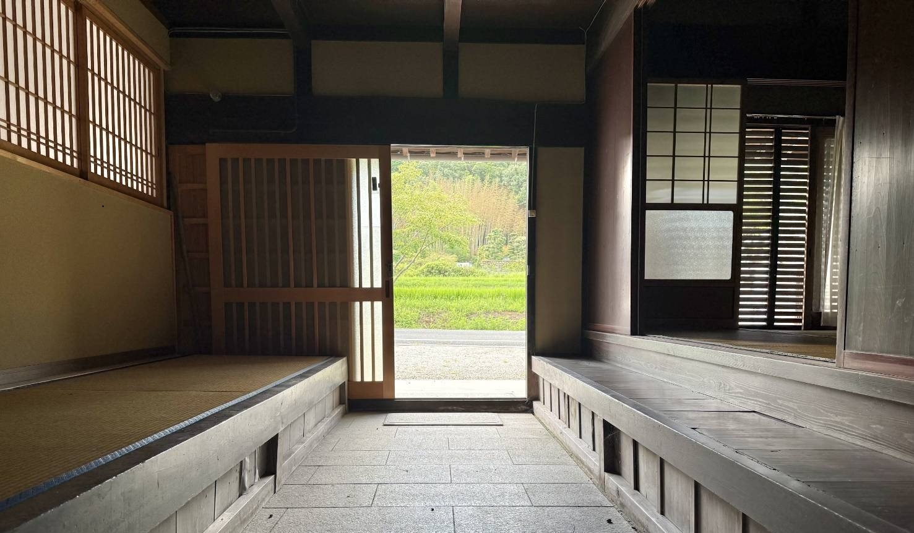
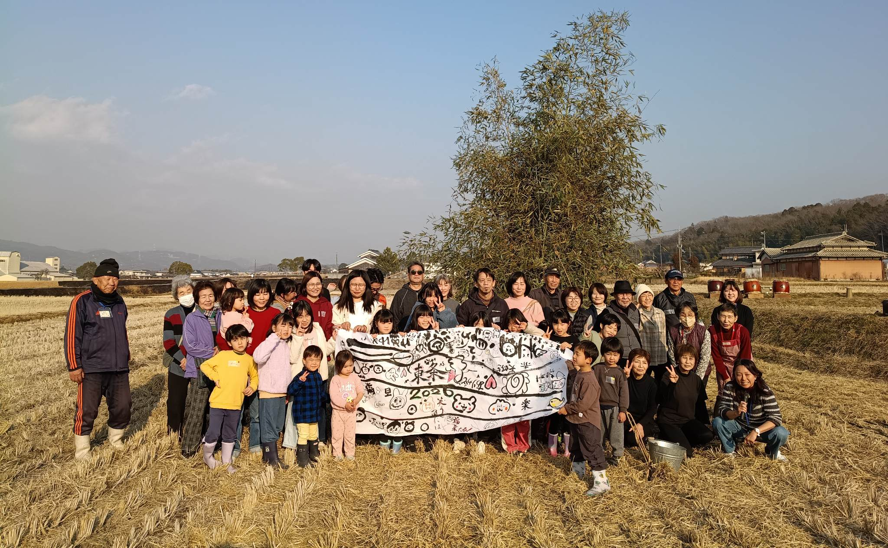
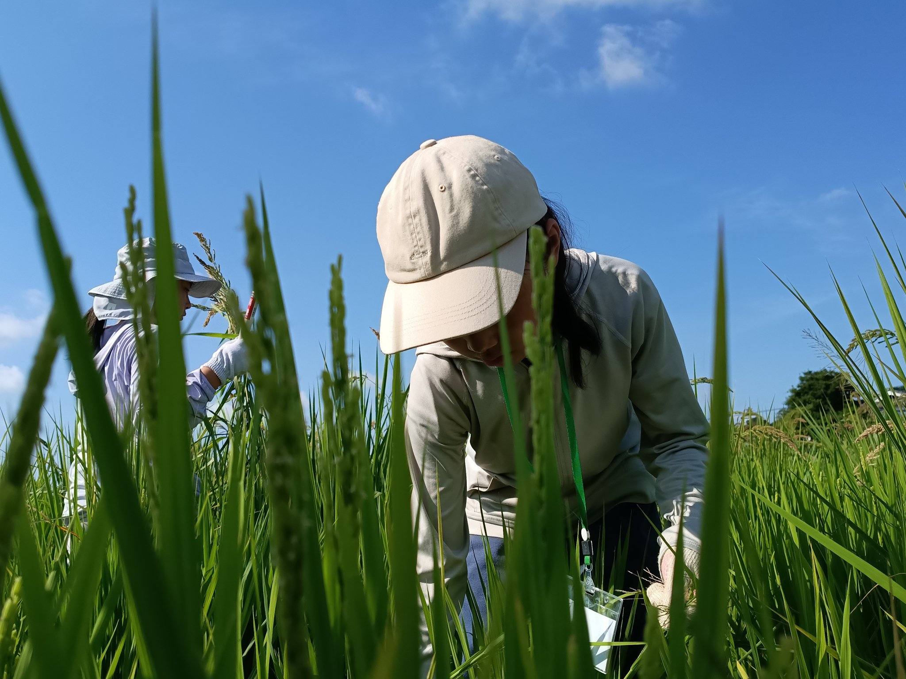

酒米山田錦の特A地区として知られる兵庫県加東市 東条地域。この土地で、暮らしと農業を次世代へつなぐための取組を行っています。
「農村RMO（農村型地域運営組織）」は、地域で暮らす人々が中心となり、複数の集落が協力して、農地の保全・地域資源の活用・生活支援に取り組む組織です。とうじょうRMOは、岡本・森・南山の3地区が連携し、農業を中心とした持続可能な地域づくりに挑戦しています。
農村RMOが取り組む、3つの基本的な活動です。
農村RMOと、とうじょうRMOの成り立ち。
農用地保全・地域資源活用・生活支援
高齢化・人口減少と、農業を取り巻く現実。
ご意見・ご質問・ご相談はこちらから。
最新の活動情報はInstagram・公式LINEで発信しています